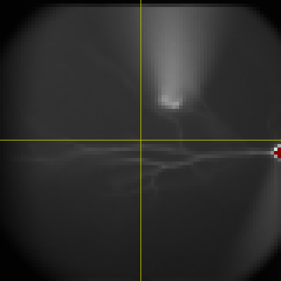

2D RenderingThe baseline fluorescence intensity (F0) will be the example in this tutorial. The default display mode is shown on the right. |
||
Reference LinesTo display reference lines indicating the boundaries between the four quads, check "Reference". |
 | |
NormalizationIn some cases, the image is too dim to see it clearly. To take advantage of the full dynamic range of the monitor, check "Normalization". |
Original |
Normalized Rendering |
Linear InterpolationTo linearly interpolate the values in monitor pixels between the centers of camera pixels, check "Interpolation". By default, Ephic converts quad mesh to triangle mesh. You can leave this job to OpenGL by unchecking "Triangle". |
Original |
Linear Interpolated |
Dynamic Range Control - Upper BoundaryBy default, Ephic displays the data in full dynamic range (0 to 100 %) of the camera. To change the upper boundary, adjust "High (%)" slider and you will see the change in the imaging window. |
Original |
Upper Boundary Changed to 36% |
Dynamic Range Control - Lower BoundaryTo change the lower boundary, adjust "Low (%)" slider and you will see the change in the imaging window. |
Upper Boundary: 36%; Lower Boundary: 0% |
Upper Boundary: 36%; Lower Boundary: 11% |